CRPO
언어모델의 Reasoning이 독서 지문 품질에 미치는 영향
이 글은 KSAT Agent에 탑재될 국어 독서 지문 생성 모델의 품질 향상을 위한 학습 알고리즘 연구를 다룹니다.
한 편의 수능 독서 지문에는 지면에 드러나지 않는 결정들이 담겨 있습니다.
- 지문에 어떤 정보를 담고 무엇을 덜어 낼지
- 개념을 어떤 순서로 제시할지
- 문단과 문단을 어떻게 연결할지
- 보기 문항의 자료구조는 어떻게 설계할지
이러한 결정은 지문에 첫 문장을 쓰기 전에 이루어집니다.
언어모델의 출제 과정 또한 이와 유사합니다. 언어모델은 요청을 받은 즉시 지문과 문항을 출력하는 것이 아니라, 위에서 언급한 다양한 고민을 미리 사고 과정(Chain of Thought, 이하 CoT)에 기록해 둡니다. 최종 지문과 문항을 출력할 때 언어모델은 자신이 CoT에 기록해 둔 설계를 참조하여 더욱 완성도 높은 결과물을 출력할 수 있습니다. 따라서, 프롬프트에 같은 주제를 입력해도 모델의 사고 과정을 기록한 CoT가 달라지면 지문의 내용과 전개 방식이 달라질 수 있습니다.
문제는 이 설계 능력을 어떻게 학습시키는가입니다. 기출 지문을 정답으로 사용하는 SFT는 완성된 문장의 문체와 전개를 학습시키는 데 효과적이지만, 그 지문이 어떤 판단을 거쳐 완성되었는지는 데이터에 남아 있지 않습니다. 출제 전문가의 판단을 CoT로 직접 작성하여 학습시키는 방법도 생각할 수 있으나, 머릿속에서 이루어진 선별과 설계를 지문마다 글로 옮겨 적는 일은 사실상 지문을 한 편 더 쓰는 일에 가깝습니다.
CRPO는 이 문제를 다른 방향에서 접근합니다. 정답 CoT를 사람이 작성하는 대신, 이미 완성되어 있는 기출 지문을 기준으로 삼아 CoT를 평가합니다. 서로 다른 CoT 뒤에 같은 기출 지문을 붙이고 각 토큰의 CE를 측정하면, 어떤 CoT가 그 지문으로 이어지기에 더 적합한 설계였는지 비교할 수 있습니다. 이 글에서는 CRPO의 원리와 학습 결과를 소개합니다.
1. 모델의 사고 과정, Reasoning이란?
AI에게 간단한 사실을 묻거나 문장을 다듬어 달라고 요청하면 대체로 원하는 답이 바로 돌아옵니다. 하지만 여러 조건이 얽힌 문제를 입력하면 조건 하나를 빠뜨린 채 결론을 내리거나, 앞에서 세운 기준과 어긋나는 답을 내놓기도 합니다. 문장 자체는 자연스럽지만 풀이의 순서와 논리가 맞지 않는 경우입니다.
Reasoning 모델은 이러한 문제를 줄이기 위해 등장했습니다. 답을 곧바로 출력하는 것이 아니라, 문제를 어떻게 풀지 CoT에 먼저 정리해 둡니다. 주어진 조건을 확인하고, 필요한 관계를 세우고, 처리할 순서를 정한 뒤에야 최종 답변을 작성합니다.
아래는 수학 문항을 입력했을 때의 화면입니다. 모델은 연속 조건과 극한 조건을 어떤 순서로 확인할지 먼저 정리하고, 이 정리가 끝난 뒤에야 풀이를 시작합니다.
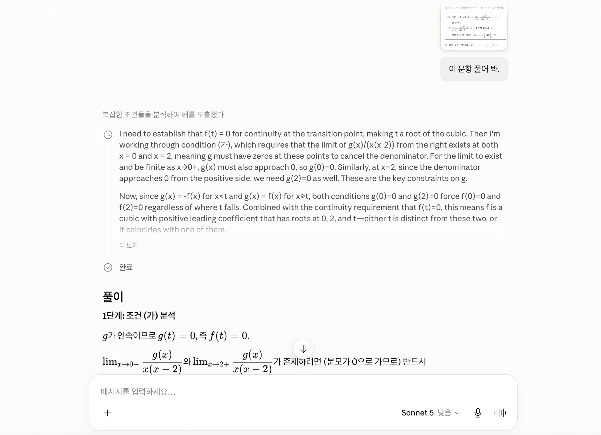
이렇게 계획을 먼저 세워 두면 조건을 빠뜨리는 경우가 줄어들고, 여러 단계를 일정한 순서로 처리할 수 있습니다.
독서 지문 작성에서도 마찬가지입니다. 무엇을 담을지, 어떤 순서로 제시할지, 문단을 어떻게 연결할지가 CoT에서 먼저 결정됩니다. 따라서 지문의 품질을 높이려면 완성된 문장뿐 아니라 그 앞에 놓인 CoT까지 학습할 필요가 있습니다.
2. 언어모델의 문장력 측정 : Cross Entropy
CRPO를 설명하기 전에, CoT를 비교하는 기준이 되는 값부터 살펴보겠습니다. 언어모델은 문장을 한 번에 쓰지 않고 토큰을 하나씩 생성합니다. '나는 아침에 사과를'까지 읽은 모델은 자신이 출력할 수 있는 모든 어휘의 집합(vocab) 전체를 놓고 다음에 올 토큰의 확률을 계산합니다. '먹었다'에 70%, '깎았다'에 15%처럼 모든 후보에 확률을 부여하고, 이 분포에서 다음 토큰을 고릅니다.
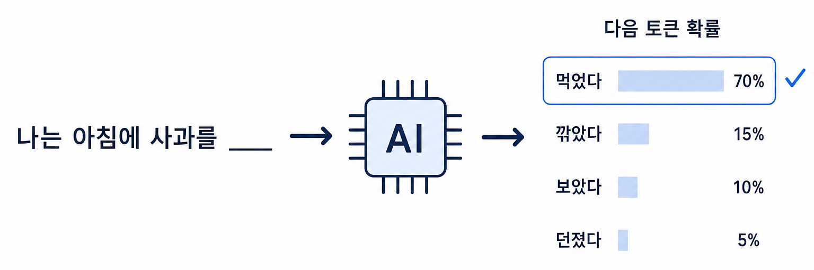
이 확률은 모델이 문맥을 얼마나 잘 이해했는지 보여 주는 값이기도 합니다. 실제 글에서 다음에 온 토큰이 '먹었다'였다면, '먹었다'에 70%를 부여한 모델은 이 문맥을 잘 예측한 것이고, 5%만 부여한 모델은 그렇지 못한 것입니다. Cross Entropy Loss(이하 CE)는 이 정도를 하나의 수치로 나타냅니다. 실제로 이어진 토큰에 모델이 부여한 확률에 음의 로그를 취한 값으로, 부여한 확률이 1에 가까울수록 0에 가까워지고 확률이 낮을수록 커집니다.
이를 수식으로 적으면, 앞선 문맥 $u_{<t}$ 뒤에 실제 토큰 $u_t$가 이어질 때 위치 $t$의 CE는 다음과 같습니다.
$$\operatorname{CE}(u_t)=-\log p_\theta(u_t\mid u_{<t})$$
글 전체의 CE는 각 토큰 CE의 평균입니다. 어떤 글의 CE가 낮다는 것은 모델이 그 글을 문맥에 맞는 자연스러운 전개로 예측했다는 뜻입니다. CRPO는 이 값을 CoT 평가의 기준으로 사용합니다.
3. CRPO 알고리즘
CRPO가 해결하는 문제는 정답 CoT가 없는 상태에서 여러 CoT의 우열을 가리는 것입니다. 기준은 앞 절에서 설명한 CE입니다. CoT가 기출 지문과 같은 정보 선별과 전개 설계를 담고 있었다면, 그 CoT를 읽은 모델에게 기출 지문은 예측하기 쉬운 글이 되어 각 토큰의 CE가 낮아집니다. 반대로 설계가 어긋난 CoT 뒤에서는 같은 지문의 CE가 높아집니다. 따라서 어떤 CoT 뒤에서 기출 지문의 CE가 낮았는지를 재면, 사람이 개입하지 않아도 CoT의 우열을 가릴 수 있습니다.
실제 학습은 다음 순서로 진행합니다. 먼저 기출에서 다룬 주제로 수능 독서 지문 작성을 요청하여 여러 CoT와 AI 지문을 생성합니다. 생성된 AI 지문은 잘라 내어 CoT만 남기고, 그 자리에 원본 기출 지문을 붙입니다. 입력과 원본 기출 지문이 모두 같으므로, 시퀀스 사이의 CE 차이에는 CoT의 차이만 반영됩니다.
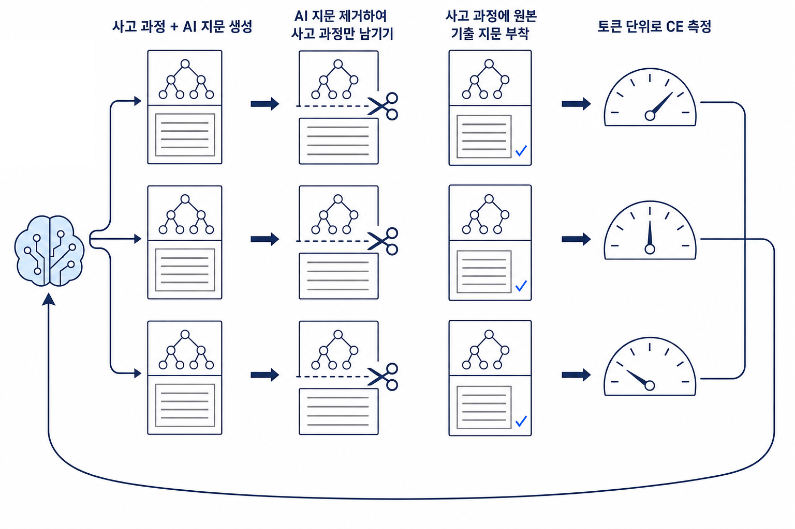
이 절차를 거친 시퀀스는 지문 작성 요청, 비교할 CoT, 원본 기출 지문의 세 부분으로 구성됩니다. 입력 $x$, CoT $c_i$, 원본 기출 지문 $y_{gt}$로 적으면 다음과 같습니다.
$$S_i=[x,\;c_i,\;y_{gt}]$$
CE는 $y_{gt}$ 구간에서만 계산합니다. 입력과 CoT 구간은 -100으로 가려 제외하고, 각 토큰의 CE에 위치별 가중치 $w(t)$를 곱해 평균합니다. CE가 낮을수록 reward가 커지도록 부호를 바꿉니다.
$$r_i=-\frac{1}{N}\sum_{t=1}^{N}w(t)\operatorname{CE}(u_t)$$
같은 입력에서 생성된 CoT들의 reward를 평균과 표준편차로 정규화하면 GRPO의 Advantage가 됩니다. CE가 낮았던 CoT는 양의 Advantage를, 높았던 CoT는 음의 Advantage를 받습니다.
$$A_i=\frac{r_i-\mu_r}{\sigma_r+\epsilon}$$
이 구성에서 학습되는 대상은 원본 기출 지문이 아니라 그 앞에 놓인 CoT입니다. 별도의 Reward Model이나 사람이 작성한 정답 CoT는 필요하지 않습니다.
4. 실험 지표 및 학습 추이
Qwen3-32B에 LoRA를 적용하고, 입력마다 CoT와 AI 지문을 6편씩 생성해 학습했습니다. 평가 기준은 같은 CoT 뒤에 붙인 원본 기출 지문에 대해 학습 전 모델이 계산한 CE입니다. 전체 101 step 로그에서 step 20부터 100까지 81회 모두 학습 중 모델의 CE가 학습 전 모델보다 낮았습니다.
| 입력당 생성 시퀀스 | CE 감소 관측 회차 | step당 평균 CE 감소량 |
|---|---|---|
| 6편 | 81/81 | 0.0418 |
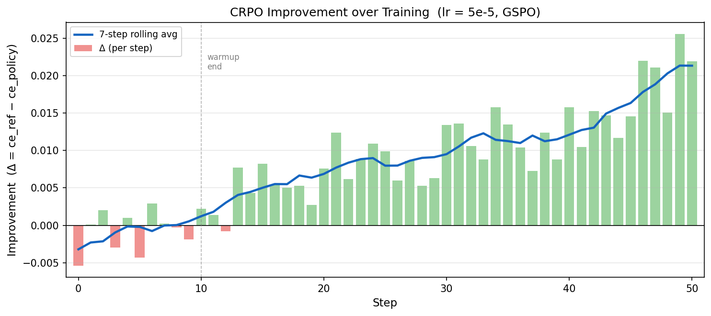
학습이 진행될수록 모델은 같은 원본 기출 지문의 토큰에 더 높은 확률을 부여했습니다. 이 변화가 생성 지문에서 어떤 차이로 나타나는지 다음 절에서 확인합니다.
5. 생성 지문 비교
기출에서 다룬 주제를 프롬프트로 입력해 학습 전 모델 BASE와 학습 후반 모델 CRPO의 출력을 비교했습니다. 노란색은 두 출력이 같은 개념을 설명하는 구간입니다.
개화 개념의 변천에 대한 수능 국어 독서 지문을 작성해 봐.
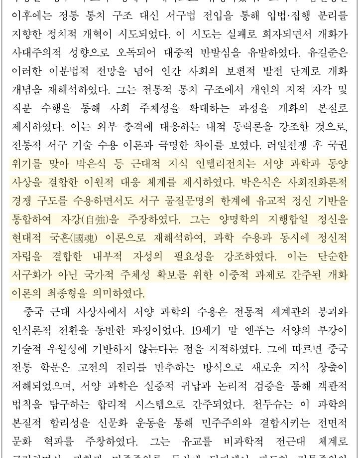
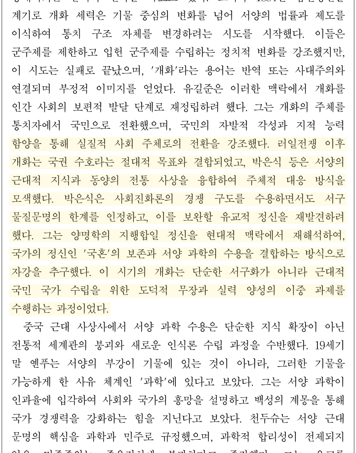
- BASE가 요소를 나열한 뒤 자강으로 바로 정리하는 반면, CRPO는 국혼 보존과 과학 수용 사이의 중간 관계까지 포함합니다.
- BASE가 개별 개념의 나열에 그치지만, CRPO는 도덕적 무장과 실력 양성이라는 두 과제로 연결합니다.
공포 소구 이론에 대한 수능 국어 독서 지문을 작성해 봐.
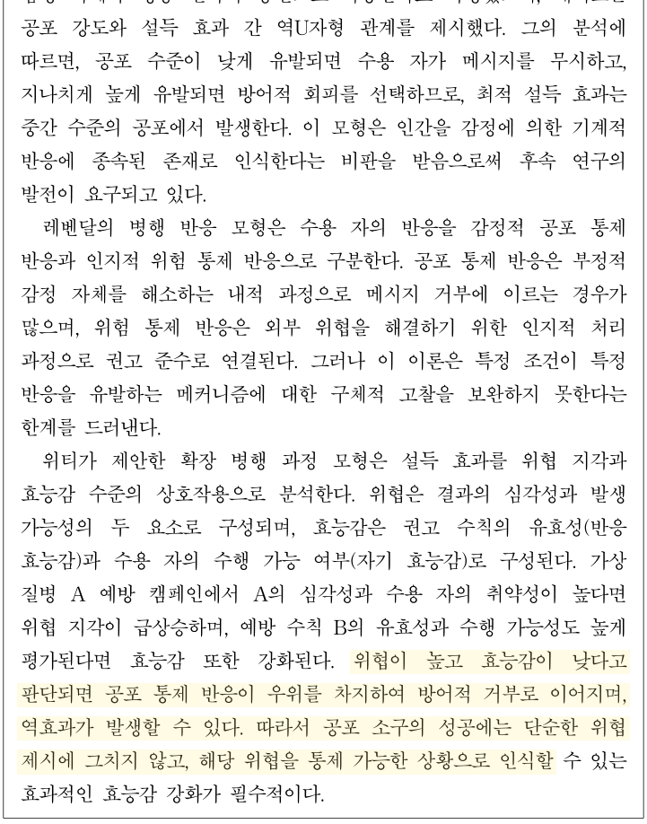
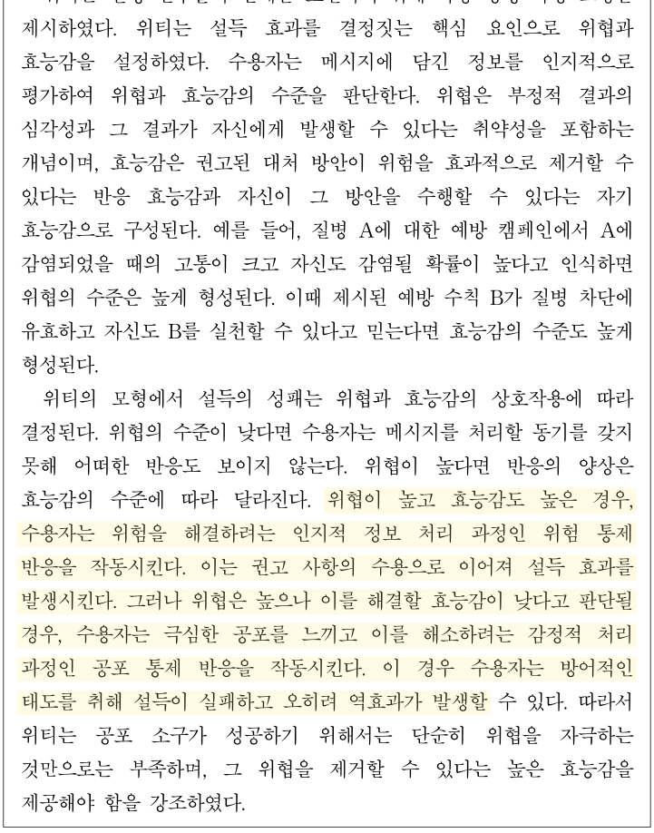
- BASE가 효능감이 낮은 상황의 공포 통제에 집중하는 반면, CRPO는 효능감 수준별 위험 통제와 공포 통제를 함께 비교합니다.
- BASE는 역효과 설명에 그치지만, CRPO는 권고 수용과 방어적 거부라는 행동 반응까지 연결합니다.
확산 모델의 원리에 대한 수능 국어 독서 지문을 작성해 봐.
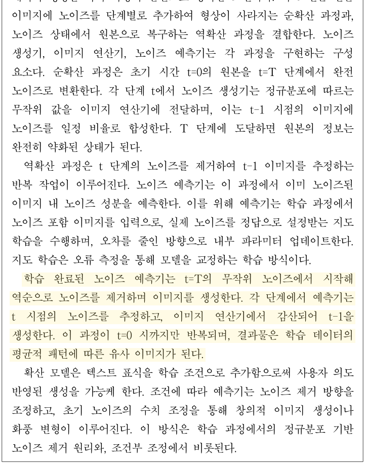
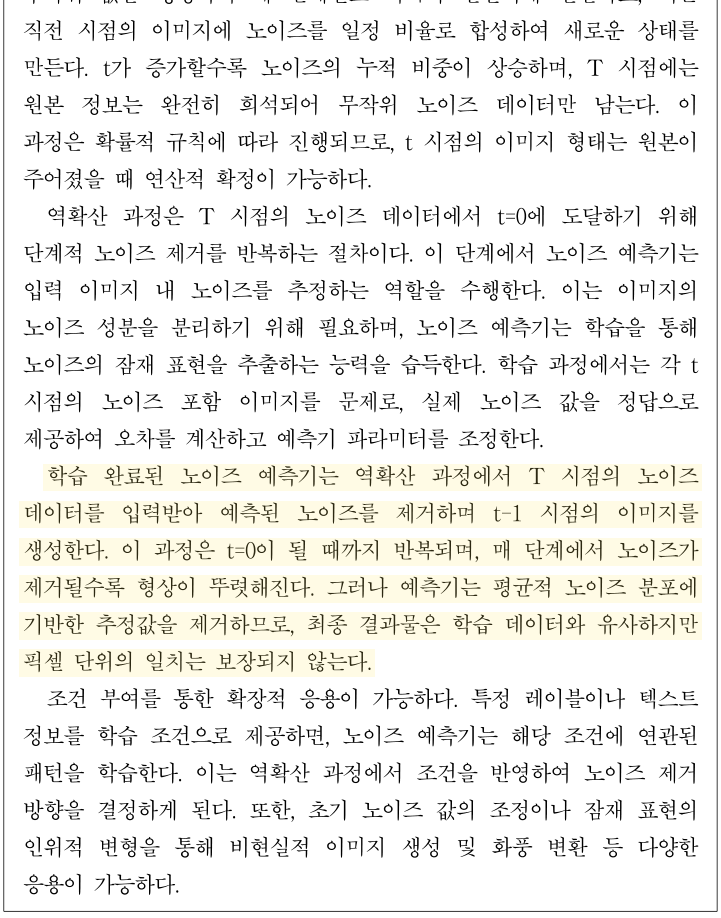
- BASE가 노이즈 추정과 제거 절차를 나열한 반면, CRPO는 입력 상태부터 종료 조건까지 순서대로 서술합니다.
- BASE는 절차 설명에 그치지만, CRPO는 형상 변화와 픽셀 단위 불일치가 발생하는 이유까지 밝힙니다.
세 사례 모두 CRPO 출력에서 같은 분량에 담긴 정보가 늘고, 조건과 결과를 잇는 전개가 구체화되었습니다. 인문에서는 개념 사이의 결합이 결론까지 이어졌고, 사회에서는 조건에 따른 반응과 행동 결과가 구분되었으며, 과학·기술에서는 절차의 순서와 각 결과가 발생하는 이유가 함께 서술되었습니다. CRPO 학습으로 낮아진 CE가 생성 지문의 정보 밀도와 논리 전개의 향상으로 이어졌습니다.
6. 토큰 위치별 CE 분석
글의 첫 문단은 이후 전개될 개념과 방향을 결정합니다. 자기회귀 언어모델에서도 마찬가지입니다. 원본 기출 지문의 앞부분은 CoT 바로 뒤에서 예측되고, 뒤로 갈수록 이미 주어진 지문의 토큰이 문맥으로 쌓이면서 CoT의 영향은 점차 줄어들 수 있습니다.
이를 확인하기 위해 20개 입력마다 CoT를 8개씩 생성하고, 같은 원본 기출 지문을 붙인 160개 시퀀스에서 토큰 위치별 CE를 계산했습니다. 같은 위치에서 여덟 CoT 사이의 CE 표준편차가 클수록, 그 토큰의 예측 확률이 CoT에 따라 크게 달라졌다는 뜻입니다.
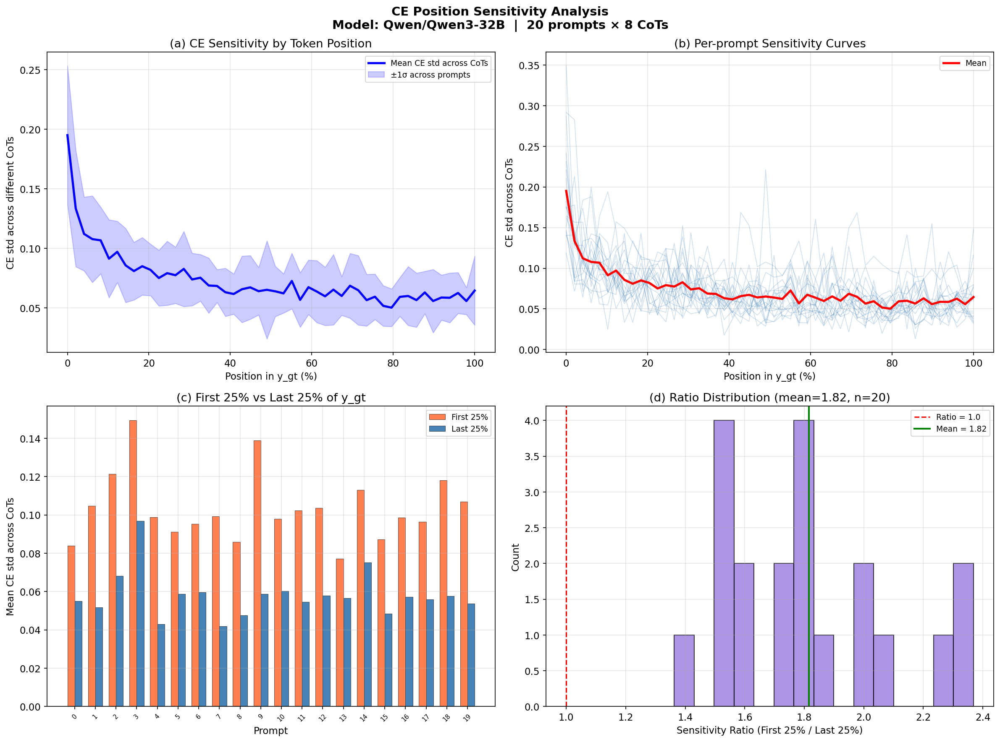
| 분석 항목 | 측정 결과 |
|---|---|
| 앞쪽 25% / 뒤쪽 25%의 평균 CE 표준편차 | 1.8158배 |
| 앞쪽 25%의 CE 편차가 더 컸던 입력 | 20/20 (100%) |
| 첫 10% / 마지막 10%의 CE 표준편차 | 2.18배 |
| 지수 감쇠 모델 적합도 | R² = 0.9007 |
| CoT 영향력 변동 폭이 절반으로 감소하는 시점 | 원본 기출 지문 전체 길이의 6.4% 지점 |
CoT에 따른 토큰 확률의 차이는 원본 기출 지문의 앞부분에서 가장 컸고, 지문의 토큰이 누적될수록 빠르게 줄었습니다. CoT는 지문의 도입에서 무엇을 먼저 제시하고 어느 방향으로 전개할지를 정하는 데 주로 작용합니다.
7. SFT와 CRPO의 관계
완성된 지문만으로 SFT를 진행하면 CoT 능력이 약해질 수 있다는 우려가 있습니다. 그러나 토큰 위치별 분석은 두 학습이 지문의 서로 다른 구간에 작용한다는 것을 보여 줍니다. CoT의 영향은 지문 앞부분에 집중되고, 중반 이후에는 이미 주어진 지문의 토큰이 다음 토큰 예측을 주도합니다.
두 방법이 모델에 전달하는 정보도 다릅니다. SFT는 기출 지문을 그대로 정답으로 사용하므로 문장 단위의 표현과 서술 방식을 직접 학습시킵니다. CRPO는 같은 기출 지문을 사용하지만 지문 자체를 학습하지 않습니다. 어떤 CoT가 그 지문으로 이어지기에 적합했는지를 학습하며, 갱신되는 것은 정보를 고르고 전개를 설계하는 CoT입니다.
따라서 두 방법은 대체 관계가 아니라 서로 다른 구간을 맡는 보완 관계에 가깝습니다. 문체와 중후반 전개는 SFT로 학습하고, 내용 설계와 도입을 결정하는 CoT는 CRPO로 학습하는 구성입니다. 일반적인 post-training과 같은 순서로, SFT를 마친 모델에 CRPO를 이어서 적용할 수 있습니다.
CRPO는 사람이 작성한 정답 CoT를 요구하지 않으므로, 완성된 정답 텍스트가 있는 영역이라면 추가 라벨링 없이 적용할 수 있습니다. 기출 지문이 축적될수록 학습 데이터도 같이 늘어납니다. 수능 독서 외의 제재나 해설 작성처럼 정답 텍스트가 쌓여 있는 다른 글쓰기 작업에도 같은 방식이 쓰일 수 있고, 학습에 사용한 CE 측정은 모델이 생성한 CoT의 품질을 사람 개입 없이 비교하는 지표로도 활용될 수 있습니다.
실제 지문 품질에 미치는 영향은 같은 검증 자료에서 SFT 단독 모델과 SFT 이후 CRPO 모델을 비교하고, 출제 전문가가 생성 지문을 평가하는 후속 실험으로 확인할 계획입니다.
부록
학습 스크립트 요약 및 손실함수 구현 (pytorch)
| 항목 | 설정 |
|---|---|
| 모델 | Qwen3-32B · BF16 · 최대 8,192 token |
| LoRA | rank 16 · alpha 32 · attention/MLP projection |
| 배치 | G=8 · per-device 8 · gradient accumulation 8 · reward batch 8 |
| 학습 파라미터 | AdamW 8-bit · learning rate 5e-4 · warmup 10% · 3 epoch |
| CE 가중치 | 20개 입력 × 8개 CoT의 토큰 위치별 CE 표준편차를 a·exp(-b·t/T)+c에 적합 · 0.106537 × exp(-10.8309 × t/T) + 0.062938 · R² 0.9007 · half-life 6.4% · 평균 1로 정규화 |
# 입력과 CoT 구간은 -100으로 가려 CE 계산에서 제외합니다.
labels = input_ids.clone()
labels[:prefix_len] = -100
shift_labels = labels[1:]
# 각 위치의 다음 토큰 CE를 계산합니다.
per_token_loss = torch.nn.functional.cross_entropy(
logits[:-1],
shift_labels,
ignore_index=-100,
reduction="none",
)
# 원본 기출 지문 토큰만 선택하고 앞부분에 더 큰 위치 가중치를 적용합니다.
answer_loss = per_token_loss[shift_labels != -100]
weights = _compute_position_weights(answer_loss.numel(), device)
ce = (answer_loss * weights).mean()
# CE가 낮은 CoT가 더 큰 reward를 받습니다.
reward = -ce